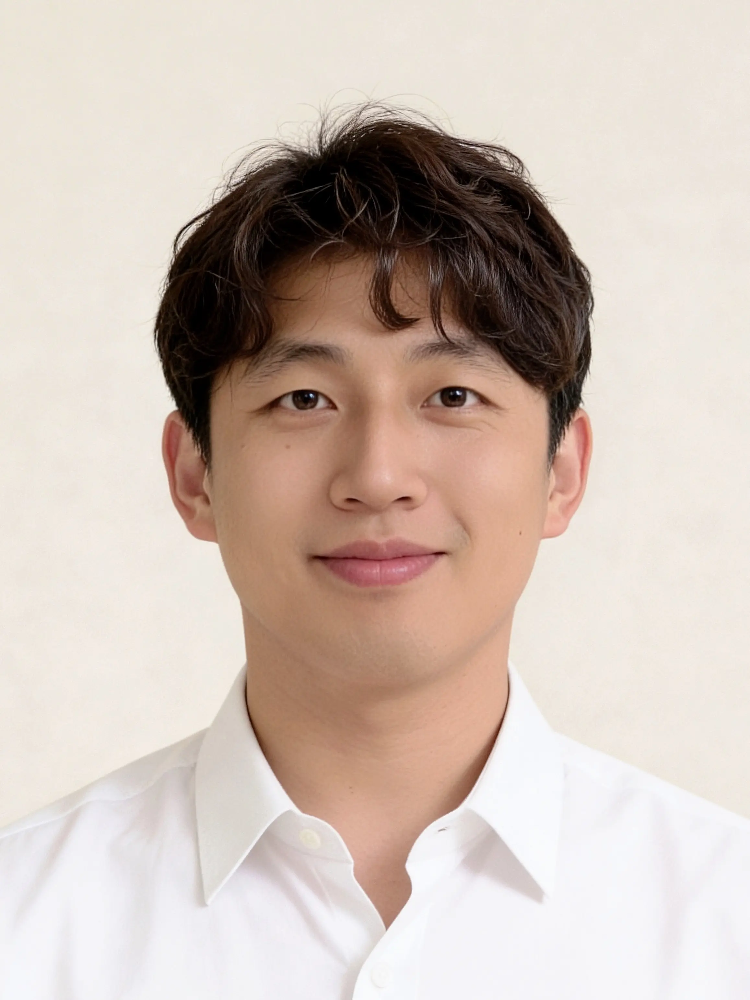

Digital Twin · AI · Simulation Consulting
DAS Lab은 디지털트윈, AI 및 시뮬레이션 기반으로 고객 맞춤형 솔루션을 제공합니다.
We leverage Digital Twin, AI, and Simulation for your project's success.
// What we do
복잡한 운영 시스템을 대상으로 시뮬레이션과 Digital Twin 엔지니어링을 엔드투엔드로 제공합니다.
End-to-end simulation and digital twin engineering for complex operational systems.
공정, 물류 흐름, 운영 정책을 가상 환경에서 그대로 재현합니다. 제조 · 물류 · 건설 · 국방 · 에너지 분야에서 검증된 AnyLogic 기반 모델링으로 실행 전에 답을 확인합니다.
We recreate your processes, material flows, and operating policies in a virtual environment. Proven AnyLogic-based modeling across manufacturing, logistics, construction, defense, and energy — find the answer before you commit.
현장 데이터를 실시간으로 연결한 3D 가상 현장을 구축합니다. 시나리오 실험부터 운영 모니터링까지, 화면 속에서 현장을 직접 움직여볼 수 있습니다.
We build 3D virtual sites connected to live field data. From scenario testing to operations monitoring, interact with your site directly on screen.
시뮬레이션 환경에서 강화학습 에이전트를 학습시켜 스케줄링, 자원 배분 같은 운영 정책을 최적화합니다. 사람의 감이 아닌, 수만 번의 가상 실험으로 찾은 답을 제시합니다.
We train reinforcement learning agents inside simulation environments to optimize scheduling, resource allocation, and operating policies. Answers backed by tens of thousands of virtual experiments — not gut feeling.
기초 문법부터 실제 프로젝트 적용까지, 수강자 수준에 맞춘 커리큘럼으로 진행합니다. 100회 이상의 기업 교육 경험을 바탕으로 실무에 바로 쓰이는 모델링을 가르칩니다.
From fundamentals to real project application, our curriculum adapts to your team's level. Built on 100+ corporate training sessions, we teach modeling that works in practice.
대학 · 정부출연연구소와의 공동 연구를 수행합니다. 방법론 설계부터 시뮬레이션 기반 검증, 논문 · 기술 문서 작성까지 연구 전 과정을 함께합니다.
We partner with universities and government research institutes. From methodology design to simulation-based validation and technical writing — we support the full research cycle.
카테고리에 없는 문제라도 괜찮습니다. 복잡한 시스템의 의사결정 문제라면, 가장 적합한 기술 조합을 찾는 것부터 함께 시작합니다.
Don't see your problem above? If it's a complex system decision, we start by finding the right technology mix — together.
// How we work
딥다이브부터 클로징까지, 신뢰할 수 있는 모델을 만드는 4단계 프로세스입니다.
From deep dive to close — our four-stage process for building models you can trust.
정확한 모델 개발을 위해 현장의 실제 문제, 제약사항, 성공 기준을 파악하고 정의하는 과정에서 시작합니다.
We dig into your operational challenges, constraints, and success criteria — building the foundation for a model that reflects how things actually work.
문제 해결에 적합한 아키텍처와 방법론을 선정하고, 마일스톤 기반의 일정 관리로 고객이 목표한 납기를 준수합니다.
We select the right architecture and methodology, then manage delivery through milestone-based scheduling that keeps your deadlines intact.
모델 개발 현황을 정기적으로 시연하고, 이해관계자 피드백을 반영하며 완성도를 높여갑니다.
We demonstrate progress through regular reviews, incorporating stakeholder feedback at every stage to raise the quality of the final model.
검증된 모델을 기반으로 문서화, 교육, 컨설팅을 수행하여 고객이 스스로 운영할 수 있도록 지원합니다.
We deliver validated models with full documentation, training, and consulting — so your team can operate independently.
// Who we work with
정부 기관, 대형 엔지니어링 기업, 연구 기관 등 다양한 파트너와 함께해 왔습니다.
Trusted by government agencies, large-scale engineering firms, and research institutions.
물류 · 유통 · 공급망
Logistics · Distribution · Supply Chain
컨베이어, 소터, AS/RS, AGV 등 자동화 설비 기반 물류센터를 시뮬레이션으로 재현하여 처리량과 운영 효율을 최적화합니다. 최적 입지 선정, 공급망 설계, 물류 네트워크 최적화까지 수행합니다.
We simulate automated logistics centers — conveyors, sorters, AS/RS, AGVs — to optimize throughput and operational efficiency. We also cover site selection, supply chain design, and network optimization.
제조 · 스마트팩토리
Manufacturing · Smart Factory
수작업 중심 공정부터 자동화 설비 기반 제조현장까지, 시뮬레이션 기반 Digital Twin 구축 경험을 다수 보유하고 있습니다.
From manual processes to fully automated production lines, we bring extensive experience building simulation-based Digital Twins for manufacturing sites.
에너지 · 원자력
Energy · Nuclear
핵물질 흐름 분석, 안전조치 검증 등 높은 신뢰도가 요구되는 원자력 시설 운영을 시뮬레이션으로 모델링합니다. 정부출연연구소와의 협업 경험을 보유하고 있습니다.
We deliver high-fidelity simulation models for nuclear facility operations, including material flow analysis and safeguards verification. Proven collaboration with government research institutes.
건설 · 엔지니어링
Construction · Engineering
터널, 플랜트 등 복잡한 시공 환경의 다중 공종을 시뮬레이션하여 공정 계획과 자원 배분을 최적화합니다. 국내 메이저 건설사와의 프로젝트 경험을 보유하고 있습니다.
We simulate multi-trade construction processes for tunnels, plants, and complex sites — optimizing schedules and resource allocation. Project experience with major Korean construction firms.
국방 · 안보
Defense · Security
에이전트 기반 모델링으로 워게임 및 작전 시나리오 평가 모형을 개발합니다. 부대 운용 최적화와 복잡한 전장 환경에서의 의사결정을 시뮬레이션으로 지원합니다.
We develop agent-based wargaming and scenario assessment models, supporting force operation optimization and decision-making in complex battlefield environments.
철도 · 교통
Rail · Transportation
열차 운행 스케줄링, 조차장 · 하역 설비 운영 등 철도 기반 물류 시스템을 시뮬레이션으로 분석합니다. 대규모 제조사 철도 운송 체계 분석 및 모델링 수행 경험을 보유하고 있습니다.
We analyze rail-based logistics systems including train scheduling and yard operations. Experience analyzing and modeling rail transport systems for large-scale manufacturers.

// 대표 컨설턴트
// Principal Consultant
국내 대기업과 정부출연연구소가 찾는 시뮬레이션 컨설턴트. 10년간 산업 현장의 복잡한 운영 문제를 모델로 검증해왔습니다.
The simulation consultant that Korea's leading enterprises and government research institutes turn to. Ten years of validating complex operational problems through modeling.
25건 이상의 기업 · 공공기관 프로젝트와 100회 이상의 기업 교육을 수행했으며, 정부 및 산업계와의 연구 협력을 이어가고 있습니다.
Delivered 25+ enterprise and public sector projects and 100+ corporate training sessions, with ongoing research collaborations across government and industry.
// Get in touch
시뮬레이션 모델링, Digital Twin 구축, 교육 프로그램이 필요하신가요?
프로젝트 내용을 간단히 공유해 주세요.
Looking to model a complex system, build a digital twin, or train your team? Let's talk.
이메일
eugene4213@naver.com
전화
Phone
(+82)10-2516-7047
오피스
Office
서울특별시 마포구 양화로 147 4층 wework 115-15
4F, 147 Yanghwa-ro, Mapo-gu, Seoul, WeWork 115-15